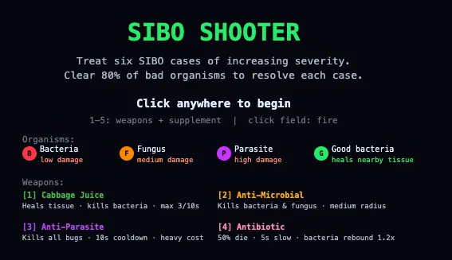

SIBO shooter
Navigating SIBO treatment is not fun; this game is an attempt to turn those dynamics on its head

First prototype
Only one person has beat it. And it wasn't me. Comments and feedback very welcome:
- In the comments here.
- Straight to my inbox at molly.womenof1@gmail.com